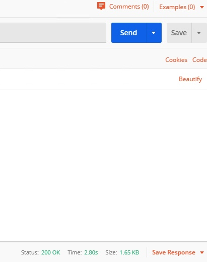

F5 Solutions for Containers > Class 3: Application Deployments with BIG-IP and Application Services (AS3) Source |
Lab 4 - Creating Multiple HTTP Applications per tenant using AS3¶
In this lab, we will create two simple HTTP applications using AS3 within the same tenant. Afterwards, we will modify the AS3 declaration to compose and create our very own third application within the same tenant.
Exercise 1 - Multi-App AS3 Declaration
Open Postman and locate the
Lab 4folder, and double-click theHTTP Multi-Applications (2 Apps)declaration.Examine the body of the AS3 declaration. Take some time to familiarize yourself with how we are declaring two HTTP applications within the same tenant. The two applications are:
http_vsandhttp_vs_2.After examining the declaration,
Sendthe declaration.Confirm the results of the POST, and make sure you receive a result of 200.
Navigate to the BIG-IP and visually confirm the changes have been made.
Exercise 2 - Add an Additional HTTP Application within a Multi-App Single-Tenant AS3 Declaration
In Postman, locate the declaration we previously sent.
We want to add another HTTP Application within the same tenant.
In Postman, and most text-editors, you can move your cursor next to an open (or closed) brace and it will locate the corresponding closed (or open) brace. This is depicted in the following images:
We want to add another application to our
http_tenant. We can copy the existing declaration for an application and modify parts as needed.We want to name the application
http_app_3and configure the following:Virtual Server Name: 'http_vs_3' Address: 10.1.20.100 Pool Name: 'http_pool_3' Members: 10.1.10.34 and 10.1.10.35 Modify the AS3 declaration so that our
http_app_3has the appropriate information. Once modified, it should look like the following.Note
You can confirm your updated declaration with the
HTTP Multi-Application (3 Apps)declaration.Sendthe declaration.Confirm the results of the POST, and make sure you receive a result of 200.
Confirm the changes on the BIG-IP. On the left column, navigate to Local Traffic -> Virtual Servers and validate the partition is
http_tenant.You should see the list of 3 virtual servers.
You can navigate to Local Traffic -> Pools to confirm the changes made to the
Pools.
Exercise 3 - Delete HTTP Applications and Tenant
In order to delete our virtual server, pools, and pool members, we can simply send a POST with an empty tenant body. Since AS3 is declarative, it will notice that we are sending a POST with an empty tenant body, and will by default delete the existing virtual server, pool and pool members.

In Postman, find the
Delete Applicationrequest. Examine the URI and body declaration. Notice we are sending a POST to the same API endpoint, but take a close look at the JSON body.The body declares a AS3 tenant called
http_tenant, but the body describing the state of the tenant is empty. By default, AS3 will remove the virtual server, pool, and pool members. Since this would cause the entire tenant to be empty, AS3 will also remove the tenant for us.Click on
Send.Confirm the results of the POST, and make sure you receive a result of 200.
Navigate back to the BIG-IP, refresh the page and confirm the changes that the tenant has been deleted.